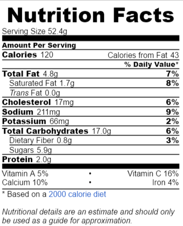

Mini Fruit Tarts
User: voltaire | Favorites: 19384
Prep Time: 40 min
Ingredients: 3 cups flour, 1 cup butter, 1 cup sugar, 6 eggs,
2 teaspoons lemon zest, 2.5 cups water, 1 tin condensed milk,
1 teaspoon vanilla powder, 0.5 cup corn flour
Instructions:
1. Combine all dough ingredients in a bowl using fingers.
2. Divide dough into small balls, press each ball over bottom and sides
of each tart tin, and press the bottom using a fork.
3. Bake at 200 degrees C for 10-13 min.
4. Meanwhile, boil water and condensed milk together in a saucepan.
5. Mix eggs, vanilla powder, corn flour, lemon zest together and pour
them into the boiled mixture from previous step.
6. Set aside to cool.
7. Mix the cooled filling with a spoon until it's smooth, and pipe the filling
with a piping bag over the cooled mini tart.
8. Serve with fresh fruits.
